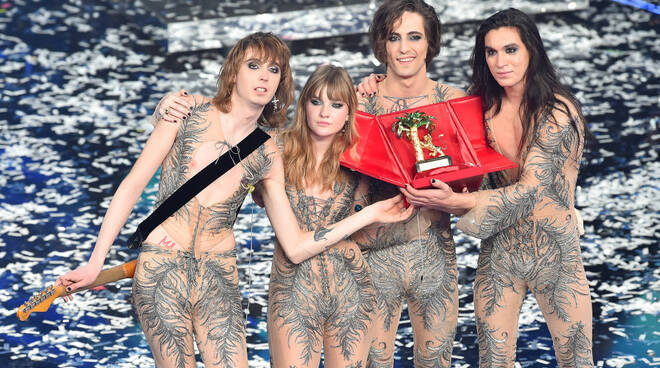
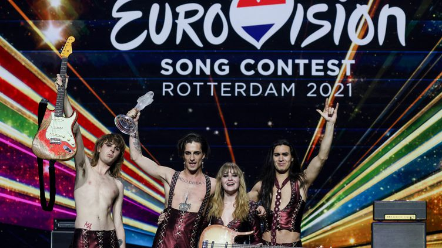

Festival Sanremo 2021

Ce succès leur ouvre les portes du label Sony Music -RCA avec lequel ils signent5. En 2018, sort leur premier album Il ballo della vita (en). Vient ensuite l’album Teatro D’ira: Vol. 1 qui sort en 2021 , peu après leur victoire au Festival de Sanremo 2021.
Durant ce festival, un projet de duo avec la chanteuse Amanda Lear devait avoir lieu. Sur invitation de Måneskin, il était prévu de partager le duo Amandoti (it)6. Faute d'argent, ce projet de duo ne se réalise pas7,8.
Eurovision Song Contest 2021

Toutefois, cette victoire permet au groupe de participer au concours Eurovision de la chanson 2021, retransmis depuis Rotterdam aux Pays-Bas, avec la même chanson gagnante Zitti e buoni. Cette chanson évoque l'anti-conformisme et appelle chacun à être libre4. Après l'annonce des votes des jurys professionnels, Måneskin n'est encore que quatrième, alors devancé par le Suisse Gjon's Tears (provisoirement premier), la Française Barbara Pravi (deuxième) et la Maltaise Destiny Chukunyere (troisième). Grâce au décisif apport de votes du public, annoncé dans une deuxième phase, le groupe remporte le concours avec un total de 524 points, devançant Barbara Pravi9.
Autres succès
Lors de leur concert en Pologne en juin 2021, Damiano David a symboliquement embrassé Thomas Raggi à la fin de leur performance sur la chanson I Wanna Be Your Slave, pour soutenir la communauté LGBTQ+10. Damiano David a conclu : « We think that everyone should be allowed to do this without any fear. We think that everyone should be completely free to do whatever the f*ck you want. Thank you Poland !
En octobre 2021, ils sortent le single MAMMAMIA qui fait une référence effrontée aux allégations post-Eurovision sur la rumeur d'usage de drogue pendant le concours Eurovision12,13. Un troisième album serait en préparation, avec une sortie attendue en fin d’année 2021, couplée avec plusieurs dates de concert à prévoir1.
La formation italienne fait la première partie des Rolling Stones à Las Vegas le 6 novembre 202114.
Découvre nos chansons